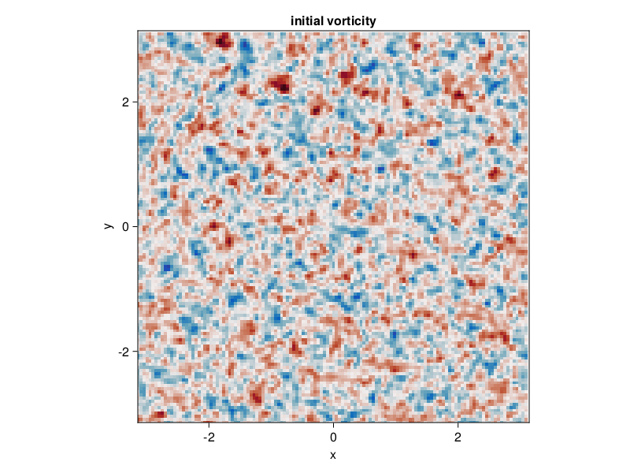
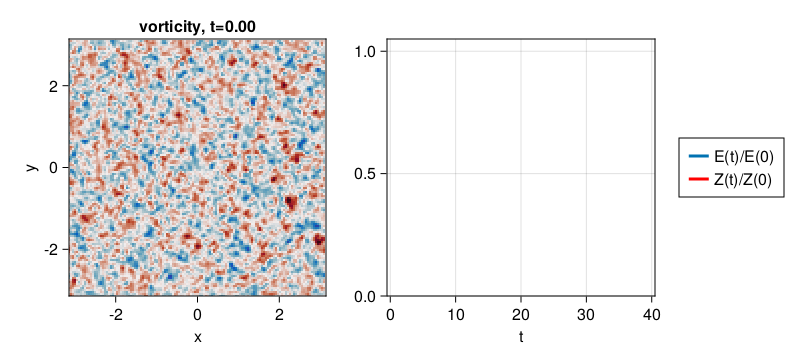
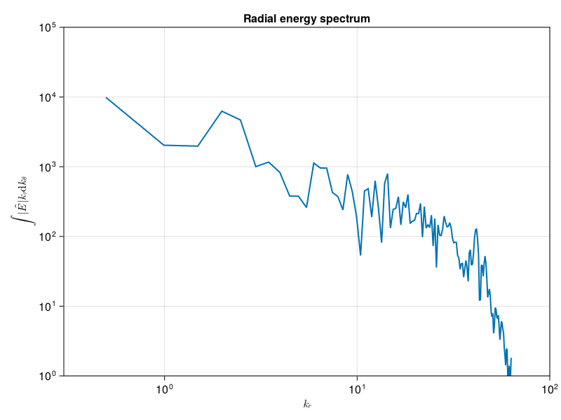

2D decaying turbulence
A simulation of decaying two-dimensional turbulence closely following the paper by McWilliams (1984).
Install dependencies
First let's make sure we have all required packages installed.
using Pkg
pkg"add GeophysicalFlows, CairoMakie"Let's begin
Let's load GeophysicalFlows.jl and some other packages we need.
using GeophysicalFlows, Printf, Random, CairoMakie
using Random: seed!
using GeophysicalFlows: peakedisotropicspectrumChoosing a device: CPU or GPU
dev = CPU() # Device (CPU/GPU)Numerical, domain, and simulation parameters
First, we pick some numerical and physical parameters for our model.
n, L = 128, 2π # grid resolution and domain lengthThen we pick the time-stepper parameters
dt = 1e-2 # timestep
nsteps = 4000 # total number of steps
nsubs = 20 # number of steps between each plotProblem setup
We initialize a Problem by providing a set of keyword arguments. We use stepper = "FilteredRK4". Filtered timesteppers apply a wavenumber-filter at every time-step that removes enstrophy at high wavenumbers and, thereby, stabilize the problem, despite that we use the default viscosity coefficient ν=0.
prob = TwoDNavierStokes.Problem(dev; nx=n, Lx=L, ny=n, Ly=L, dt, stepper="FilteredRK4")Next we define some shortcuts for convenience.
sol, clock, vars, grid = prob.sol, prob.clock, prob.vars, prob.grid
x, y = grid.x, grid.y
Lx, Ly = grid.Lx, grid.LySetting initial conditions
Our initial condition tries to reproduce the initial condition used by McWilliams (1984).
seed!(1234)
k₀, E₀ = 6, 0.5
ζ₀ = peakedisotropicspectrum(grid, k₀, E₀, mask=prob.timestepper.filter)
TwoDNavierStokes.set_ζ!(prob, ζ₀)Let's plot the initial vorticity field. Note that when plotting, we decorate the variable to be plotted with Array() to make sure it is brought back on the CPU when vars live on the GPU.
fig = Figure()
ax = Axis(fig[1, 1];
xlabel = "x",
ylabel = "y",
title = "initial vorticity",
aspect = 1,
limits = ((-L/2, L/2), (-L/2, L/2)))
heatmap!(ax, x, y, Array(vars.ζ');
colormap = :balance, colorrange = (-40, 40))
fig
Diagnostics
Create Diagnostics – energy and enstrophy functions are imported at the top.
E = Diagnostic(TwoDNavierStokes.energy, prob; nsteps)
Z = Diagnostic(TwoDNavierStokes.enstrophy, prob; nsteps)
diags = [E, Z] # A list of Diagnostics types passed to "stepforward!" will be updated every timestep.Output
We choose folder for outputing .jld2 files and snapshots (.png files).
filepath = "."
plotpath = "./plots_decayingTwoDNavierStokes"
plotname = "snapshots"
filename = joinpath(filepath, "decayingTwoDNavierStokes.jld2")Do some basic file management
if isfile(filename); rm(filename); end
if !isdir(plotpath); mkdir(plotpath); endAnd then create Output
get_sol(prob) = prob.sol # extracts the Fourier-transformed solution
get_u(prob) = irfft(im * prob.grid.l .* prob.grid.invKrsq .* prob.sol, prob.grid.nx)
out = Output(prob, filename, (:sol, get_sol), (:u, get_u))
saveproblem(out)Visualizing the simulation
We initialize a plot with the vorticity field and the time-series of energy and enstrophy diagnostics.
ζ = Observable(Array(vars.ζ))
title_ζ = Observable("vorticity, t=" * @sprintf("%.2f", clock.t))
energy = Observable(Point2f[(E.t[1], E.data[1] / E.data[1])])
enstrophy = Observable(Point2f[(Z.t[1], Z.data[1] / Z.data[1])])
fig = Figure(resolution = (800, 360))
axζ = Axis(fig[1, 1];
xlabel = "x",
ylabel = "y",
title = title_ζ,
aspect = 1,
limits = ((-L/2, L/2), (-L/2, L/2)))
ax2 = Axis(fig[1, 2],
xlabel = "t",
limits = ((-0.5, 40.5), (0, 1.05)))
heatmap!(axζ, x, y, ζ;
colormap = :balance, colorrange = (-40, 40))
hE = lines!(ax2, energy; linewidth = 3)
hZ = lines!(ax2, enstrophy; linewidth = 3, color = :red)
Legend(fig[1, 3], [hE, hZ], ["E(t)/E(0)", "Z(t)/Z(0)"])
fig
Time-stepping the Problem forward
We time-step the Problem forward in time.
startwalltime = time()
record(fig, "twodturb.mp4", 0:Int(nsteps/nsubs), framerate = 18) do j
if j % (1000 / nsubs) == 0
cfl = clock.dt * maximum([maximum(vars.u) / grid.dx, maximum(vars.v) / grid.dy])
log = @sprintf("step: %04d, t: %d, cfl: %.2f, ΔE: %.4f, ΔZ: %.4f, walltime: %.2f min",
clock.step, clock.t, cfl, E.data[E.i]/E.data[1], Z.data[Z.i]/Z.data[1], (time()-startwalltime)/60)
println(log)
end
ζ[] = vars.ζ
energy[] = push!(energy[], Point2f(E.t[E.i], E.data[E.i] / E.data[1]))
enstrophy[] = push!(enstrophy[], Point2f(Z.t[E.i], Z.data[Z.i] / Z.data[1]))
title_ζ[] = "vorticity, t=" * @sprintf("%.2f", clock.t)
stepforward!(prob, diags, nsubs)
TwoDNavierStokes.updatevars!(prob)
endstep: 0000, t: 0, cfl: 0.53, ΔE: 1.0000, ΔZ: 1.0000, walltime: 0.02 min
step: 1000, t: 10, cfl: 0.44, ΔE: 0.9633, ΔZ: 0.1954, walltime: 0.08 min
step: 2000, t: 20, cfl: 0.60, ΔE: 0.9593, ΔZ: 0.1088, walltime: 0.11 min
step: 3000, t: 30, cfl: 0.55, ΔE: 0.9577, ΔZ: 0.0762, walltime: 0.15 min
step: 4000, t: 40, cfl: 0.49, ΔE: 0.9571, ΔZ: 0.0627, walltime: 0.19 min
Radial energy spectrum
After the simulation is done we plot the instantaneous radial energy spectrum to illustrate how FourierFlows.radialspectrum can be used,
E = @. 0.5 * (vars.u^2 + vars.v^2) # energy density
Eh = rfft(E) # Fourier transform of energy density
# compute radial specturm of `Eh`
kr, Ehr = FourierFlows.radialspectrum(Eh, grid, refinement = 1)and we plot it.
lines(kr, vec(abs.(Ehr));
linewidth = 2,
axis = (xlabel = L"k_r",
ylabel = L"\int |\hat{E}| k_r \mathrm{d}k_\theta",
xscale = log10,
yscale = log10,
title = "Radial energy spectrum",
limits = ((0.3, 1e2), (1e0, 1e5))))
This page was generated using Literate.jl.